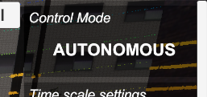
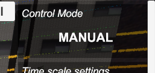
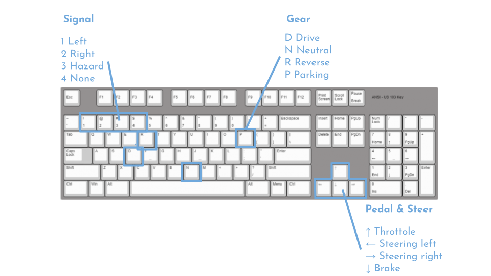
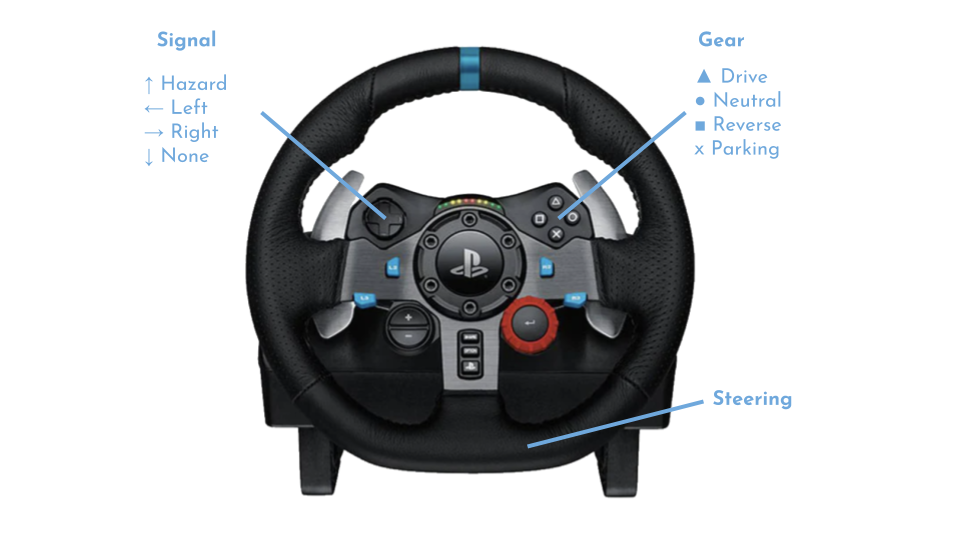
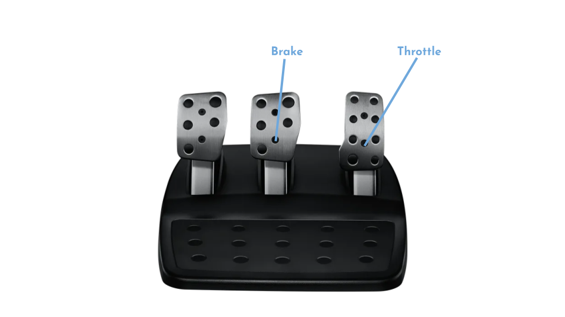
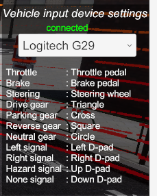
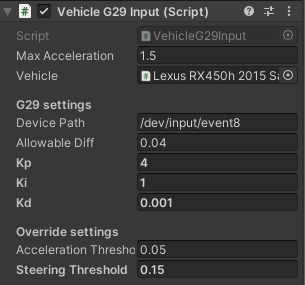

Vehicle Input
Simulated Autoware override input
Overview
Autoware accepts manual steering and pedal control by the driver during Autonomus Driving. This allows the driver to shift from Autoware's Autonomous driving to Driver's Manual driving.
stateDiagram-v2
AUTONOMOUS --> MANUAL : override input
MANUAL --> AUTONOMOUS : restart autonomous drivingQ. How to override input ?
A. Control steering and pedals with any device.
Q. How to restart autonomous driving ?
A. The control mode can be changed by input/control_mode_request ros2 service communication.
Info
sample engage command.
ros2 service call input/control_mode_request autoware_vehicle_msgs/srv/ControlModeCommand "mode: 1"
The following modes are supported.
AUTONOMOUS = 1
MANUAL = 4
In the real world, Autoware switches modes by publishing ControlMode(AUTONOMOUS or MANUAL) from the vehicle, and AWSIM simulates this as well. Current ControlMode can be checked from the AWSIM UI.
| AUTONOMOUS | MANUAL |
|---|---|
|  |  |
ControlMode at AWSIM start is AUTONOMOUS.
AWSIM supports these device inputs
Keyboard
key assign

| Button | Feature |
|---|---|
D |
Switch to move forward (drive gear) |
R |
Switch to move backwards (reverse gear) |
N |
Switch to neutral |
P |
Switch to parking gear |
Up arrow |
Forward acceleration |
Down arrow |
Reverse acceleration (decelerate) |
Left/Right arrow |
Turning |
1 |
Turn left blinker on (right off) |
2 |
Turn right blinker on (left off) |
3 |
Turn on hazard lights |
4 |
Turn off blinker or hazard lights |
Logitech G29 (Linux only)
AWSIM supports the Logitech G29 device.
Key assign
 
| Button | Feature |
|---|---|
Triangle |
Switch to move forward (drive gear) |
Square |
Switch to move backwards (reverse gear) |
Circle |
Switch to neutral |
Cross |
Switch to parking gear |
Accel pedal |
Forward acceleration |
Brake pedal |
Reverse acceleration (decelerate) |
Steering wheel |
Turning |
Right arrow |
Turn left blinker on (right off) |
Left arrow |
Turn right blinker on (left off) |
Up arrow |
Turn on hazard lights |
Down arrow |
Turn off blinker or hazard lights |
How to setup Logitech G29
- Connect the Logitech G29 to your PC
- Check the device path for G29. For example, use the
$ evtestcommand to get a path such as/dev/input/event* -
Apply G29 device path to AWSIM. If you run
AutowareSimulation.unityin the demo player (AWSIM.x86_64) or UnityEditor, it is configurable in JSON.
Set the path to G29DevicePath in config.json. e.g."G29DevicePath": "/dev/input/event8 -
Start AWSIM and select Logitech G29 from the UI. If "connected" is displayed, the vehicle can be controlled by Logitech g29.

Warning
Steering wheel must be set to center before driving.
Advanced configuration

The following parameters can be adjusted in VehicleG29Input.cs
| parameter | feature |
|---|---|
| Device Path | Device Event Path |
| Allowable Diff | Difference in steering determined to be an override (0:min, 1:max) |
| Kp | PID Gain Proportinal Parameters of FFB |
| Ki | PID Gain Integral Parameters of FFB |
| Kd | PID Gain Derivative Parameters of FFB |
| Acceleration Threshold | Override Judgment Value due to Accelerator Pedal Depression (0:min, 1:max) |
| Steering Threshold | Override Judgment Value due to Steering (0:min, 1:max) |